함께하면 목돈이 됩니다.
세상에서 가장 신선한
투명 페트병 재활용
사업배경
투명 페트병,
어떻게 처리되는지
궁급합니다.
끼리끼리 모여야 합니다.
같은 성질을 지닌 플라스틱끼리 따로 수집해야만 재활용의 가치를 더 높일 수 있습니다.
특히 단일품목으로 가장 많은 제품에 적용되는 투명 페트병은 고급 재료로서 재활용의 효과가 큽니다. 정부의 분리배출 정책은 투명 페트병(먹는샘물, 음료)을 합성수지 용기류(일반플라스틱)와 별도로 구분하여 배출하게 하고 기준도 더 엄격해졌습니다.
특히 단일품목으로 가장 많은 제품에 적용되는 투명 페트병은 고급 재료로서 재활용의 효과가 큽니다. 정부의 분리배출 정책은 투명 페트병(먹는샘물, 음료)을 합성수지 용기류(일반플라스틱)와 별도로 구분하여 배출하게 하고 기준도 더 엄격해졌습니다.
그러나 현실은 어떤가요?
수집 운반 과정에서 이미 서로 다른 재활용품과 함께 뒤섞여 버리고 나름 잘 정리해서 내보낸 투명 페트병은 보관과 운반 과정을 반복하면서 오염이 가중됩니다. 애써 분리 배출하지만 결국은 대규모 선별장에서 일일이 손으로 다시 선별 작업을 해야만 한다고 합니다.
깨끗한 페트병이 없어서 못 만들고,
어렵게 만드니 비쌀 수밖에
어렵게 만드니 비쌀 수밖에
결국 혼합된 재활용 배출 물품을 선별하고 오염 상태를 제거하기 위하여 엄청난 에너지와 인건비를 투입되고 이에 따라 재생 페트병은 신품 재료보다도 더 비싸게 됩니다.
재생 페트병의 법적 의무 사용이 강화되고 있지만 실제 재생 페트병을 생산하기 위해서 필요한 깨끗한 페트병이 절대적으로 부족하여 수요에 제대로 대응하지 못하고 있습니다.
재생 페트병의 법적 의무 사용이 강화되고 있지만 실제 재생 페트병을 생산하기 위해서 필요한 깨끗한 페트병이 절대적으로 부족하여 수요에 제대로 대응하지 못하고 있습니다.
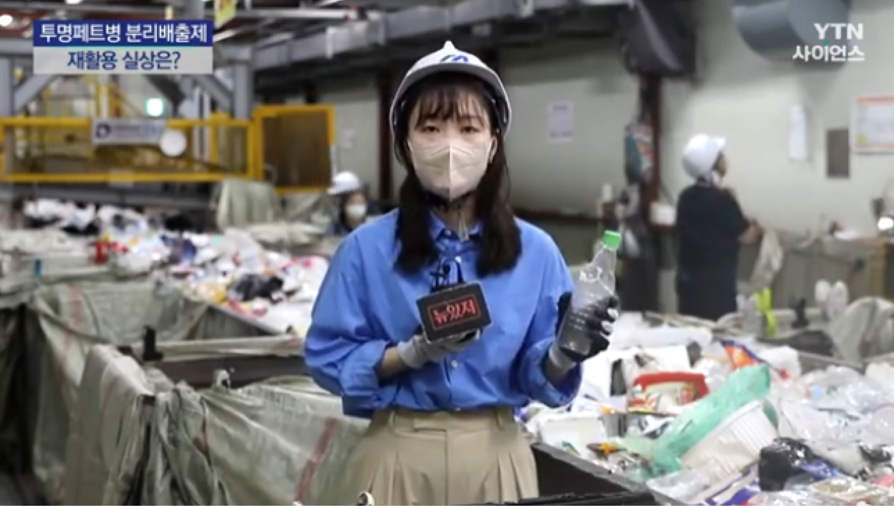
2022년 06월 17일, YTN 사이언스 애써 따로 버린 ‘투명페트병'... 재활용 실상은?
인공지능과 사물 인터넷 기술
분리배출에 대한 관심이 커지면서 전문 기업들은 AI기술과 보상 서비스를 접목한 자판기 형태의 재활용품 무인 회수 로봇으로 시장의 혁신을 시작했습니다.
그러나 1회에 30개 기준 15분 이상의 투입시간이 소요되고 대당 2천만 원이라는 비싼 가격에도 불구하고 무인 회수 로봇이 실제 수집할 수 있는 보관함 용량도 부족해서 작동을 멈추는 경우가 많아 고객 불만도 있습니다.
무인 회수 서비스는 배출 물품에 대하여 개인별 성과를 측정하고 페트병 1개당 평균 10원의 현금으로 보상하고 있습니다. 일일이 하나씩 투입하는 정성에 비하면 돈벌이의 수단이라는 생각보다는 ‘환경을 생각하는 좋은 일’을 한다는 것에 의미를 두는 참여자들이 늘어났습니다.
그러나 서비스의 본질과는 다르게 일부의 이용자들이 변칙적으로 보상받거나 사용을 독점하면서 선의의 참여자를 돌아서게 만들기도 합니다.
푼돈 벌자고 기다리는 게 아닌데..
그러나 1회에 30개 기준 15분 이상의 투입시간이 소요되고 대당 2천만 원이라는 비싼 가격에도 불구하고 무인 회수 로봇이 실제 수집할 수 있는 보관함 용량도 부족해서 작동을 멈추는 경우가 많아 고객 불만도 있습니다.
무인 회수 서비스는 배출 물품에 대하여 개인별 성과를 측정하고 페트병 1개당 평균 10원의 현금으로 보상하고 있습니다. 일일이 하나씩 투입하는 정성에 비하면 돈벌이의 수단이라는 생각보다는 ‘환경을 생각하는 좋은 일’을 한다는 것에 의미를 두는 참여자들이 늘어났습니다.
그러나 서비스의 본질과는 다르게 일부의 이용자들이 변칙적으로 보상받거나 사용을 독점하면서 선의의 참여자를 돌아서게 만들기도 합니다.
푼돈 벌자고 기다리는 게 아닌데..
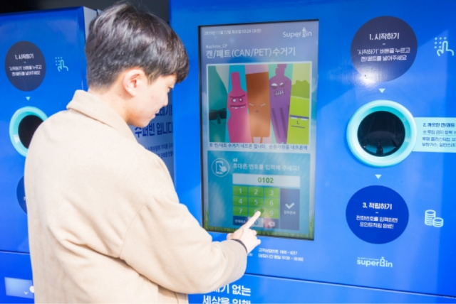
2023년 12월 15일, 서울뉴스/영등포구, AI 투명페트병 무인회수기 확대
문제의 본질에 집중
비싼 기계가 꼭 필요한 것은 아니죠. 투명 페트병을 구분은 이제는 상식. 페트병 모아서 돈을 벌 수 있다고 해서 음료수를 많이 소비하겠다는 것은 아닐 것입니다.
소소한 보상금 때문이 아니라 환경문제를 해결하려는 개인들의 수고와 노력으로 여기까지 왔습니다.
선의의 실천 의지를 꺾어버리는 현실이 문제의 핵심. 지금의 혼합 수집과 운반 과정이 아닐까요? 분리배출의 노력이 의미 있는 결과로 확인되어야 합니다.
선의의 실천 의지를 꺾어버리는 현실이 문제의 핵심. 지금의 혼합 수집과 운반 과정이 아닐까요? 분리배출의 노력이 의미 있는 결과로 확인되어야 합니다.
새로운 대안
함께 하면 목돈이 되는
제로노믹스를 소개합니다!
제로노믹스 서비스는 지역공동체를 중심으로 팀을 설립하고 그 팀의 구성원들이 동의하는 공동의 사업 목표를 설정하고 팀원들이 분리 배출한
총수거량에 대하여 누적된 성과금을 사업 기간이 끝나면 정산하여 지급하게 됩니다.
제로노믹스 사업은 아파트 및 집합건물의 운영위원회, 마을협동조합, 이통 단위의 행정 조직, 협회, 동호회, 단체와 교회, 학교와 기숙사, 유치원 등 일정한 자격을 가지는 비영리 임의단체에서 참여할 수 있습니다.
제로노믹스 사업은 아파트 및 집합건물의 운영위원회, 마을협동조합, 이통 단위의 행정 조직, 협회, 동호회, 단체와 교회, 학교와 기숙사, 유치원 등 일정한 자격을 가지는 비영리 임의단체에서 참여할 수 있습니다.
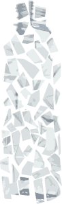
우리 서비스 아이디어는 로컬푸드와 유기농 텃밭 개념에서 시작되었습니다. 첫 출발점인 수집 운반 과정에서의 혁신 없이는 재활용 산업은 성공할 수 없습니다.
깨끗하게 배출된 페트병은 파쇄기가 탑재된 전용 작업차가 현장에서 직접 수거하고 동시에 작은 조각으로 파쇄하여 오염 없이 압축한 상태로 전용 컨테이너에 보관합니다. 많은 양이 모이면 한 번에 재생 페트병 공장으로 운송하는 물류체계를 갖춥니다.
재생 페트병을 생산하는 과정에서 최소의 에너지 자원을 투입하고 최종 생산공정을 혁신적으로 개선하여 고품질의 순환자원으로 생산하게 됩니다. 세상에서 가장 신선한 투명 페트병... 우리 동네 텃밭에서 우리 팀이 정성스럽게 직접 가꿨고 수확의 기쁨도 함께 나눕니다.
깨끗하게 배출된 페트병은 파쇄기가 탑재된 전용 작업차가 현장에서 직접 수거하고 동시에 작은 조각으로 파쇄하여 오염 없이 압축한 상태로 전용 컨테이너에 보관합니다. 많은 양이 모이면 한 번에 재생 페트병 공장으로 운송하는 물류체계를 갖춥니다.
재생 페트병을 생산하는 과정에서 최소의 에너지 자원을 투입하고 최종 생산공정을 혁신적으로 개선하여 고품질의 순환자원으로 생산하게 됩니다. 세상에서 가장 신선한 투명 페트병... 우리 동네 텃밭에서 우리 팀이 정성스럽게 직접 가꿨고 수확의 기쁨도 함께 나눕니다.
STEP1
팀 플레이 하세요!
기존의 자판기형 무인 회수 서비스 앱을 설치한 개인이 분리 수집한 페트병을 투입하면 현금으로 돌려받지만 실제 보상은 미미할 수밖에 없습니다. 최근 일부 이용자가 이미 수집된 재활용품을 무인회수기에 투입하고 부당하게 보상받는 경우도 있어 선의의 참여자가 실망하여 돌아서고 있습니다.
제로노믹스는 지역과 관심사를 중심으로 하는 공동체를 기반으로 팀을 조직하고 팀의 재활용품 배출 성과에 대하여 팀 단위의 단체보상 방식으로 운영됩니다.
사업의 모든 진행 내용과 결과는 해당 팀의 전용 페이지를 통해 투명하게 관리되고 실시간 모바일에서 확인이 가능합니다.
제로노믹스는 지역과 관심사를 중심으로 하는 공동체를 기반으로 팀을 조직하고 팀의 재활용품 배출 성과에 대하여 팀 단위의 단체보상 방식으로 운영됩니다.
사업의 모든 진행 내용과 결과는 해당 팀의 전용 페이지를 통해 투명하게 관리되고 실시간 모바일에서 확인이 가능합니다.
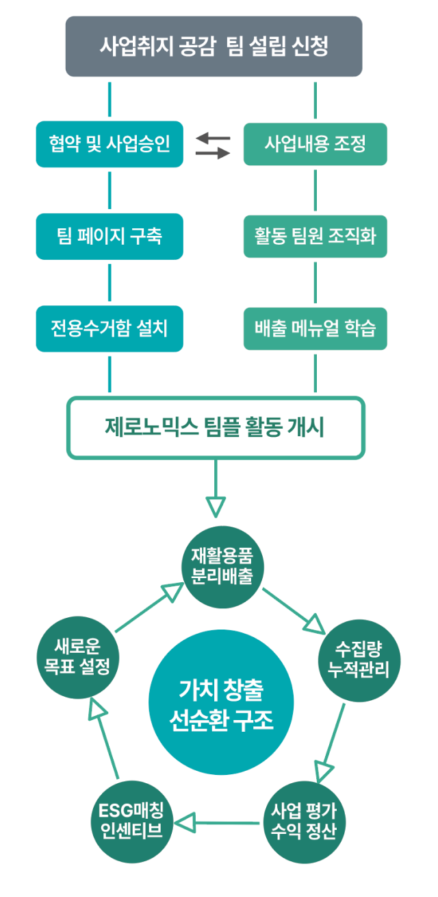
STEP2
팀의 공동 목표를 만드세요!
팀원들이 공동으로 합의하는 목표를 만드는 것은 제로노믹스 서비스를 유지할 수 있는 중요한 핵심 가치입니다.
공동체의 성격에 따라 구성원이 합의한 공동 목표는 참여하는 팀원들의 다양한 니즈를 담아낼 수 있습니다.
공동주택 운영위원회에서는 공공 전기요금 일부를 보조하여 관리비를 낮출 수도 있고 베드민턴 동호회, 조기축구클럽은 팀에서 필요로 하는 공동장비를 마련할 수도 있습니다. 어린이집에서는 원생들을 위한 이벤트 경비를 마련하면서 자원 재활용의 중요성을 교육적 성과로 이어갈 수도 있습니다. 우리 지역사회 지속 발전 가능성의 문제를 해결하고자 하는 학생 동아리의 운영 경비를 후원할 수 있습니다.
공동 목표를 정하는 과정에서 공동체와 팀원들의 관심사도 확인할 수 있고 이제까지 선뜻 해보지 못했던 의미 있는 사업의 아이디어를 새로 발견할 수 있습니다. 팀플레이에서는 2개 이상의 목표를 마련하고 사업의 경중을 조정해서 예상 수익금을 설정합니다. 장기적인 사업 목표를 위해 기금으로 적립할 수 있습니다.
목표는 의미를 만들고 의지를 강하게 해줍니다!
공동주택 운영위원회에서는 공공 전기요금 일부를 보조하여 관리비를 낮출 수도 있고 베드민턴 동호회, 조기축구클럽은 팀에서 필요로 하는 공동장비를 마련할 수도 있습니다. 어린이집에서는 원생들을 위한 이벤트 경비를 마련하면서 자원 재활용의 중요성을 교육적 성과로 이어갈 수도 있습니다. 우리 지역사회 지속 발전 가능성의 문제를 해결하고자 하는 학생 동아리의 운영 경비를 후원할 수 있습니다.
공동 목표를 정하는 과정에서 공동체와 팀원들의 관심사도 확인할 수 있고 이제까지 선뜻 해보지 못했던 의미 있는 사업의 아이디어를 새로 발견할 수 있습니다. 팀플레이에서는 2개 이상의 목표를 마련하고 사업의 경중을 조정해서 예상 수익금을 설정합니다. 장기적인 사업 목표를 위해 기금으로 적립할 수 있습니다.
목표는 의미를 만들고 의지를 강하게 해줍니다!
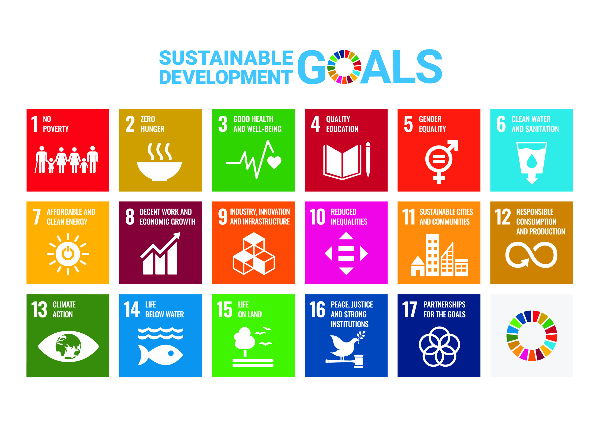
출처 : UN SDGs 협회
팀에서 설정한 공동 목표 중에서 특히 유엔이 정한 지속가능개발 목표 및 ESG 기본 개념에 맞으면서 사회적 가치를 실현하는 사업으로 판단되면 별도 관리됩니다.
사업 목표를 평가한 후 ESG 경영을 추진하는 기업과의 프로젝트 매칭을 통하여 해당 목표금액의 100%까지 별도의 장려금을 추가해서 지원해 드립니다. 해당 사업이 더 큰 성과를 낼 수 있도록 후원하는 프로그램입니다.
ESG 매칭 기금은 일방적인 기업의 후원이 아니라 우리 팀플레이에서 활동하는 팀원들이 오염 없이 깨끗하게 분리 배출한 투명 페트병에서 출발합니다.
탄소 발생과 에너지 자원 사용을 최소화하면서 생산된 고품질 재생 페트병의 탄소배출권을 기업에 판매하면서 마련된 기금으로 다시 사회적 가치 실현을 후원하는 선순환 구조를 구축하게 됩니다.
STEP3
성과는 함께 나누어요.
회원 가입 후 자신이 참여할 팀을 검색하고 해당 팀에 팀원으로 등록하면 사업에 참여할 수 있습니다.
당일 수거된 페트병의 총 무게를 측정하고 실시간으로 해당 팀의 팀 페이지에 게시됩니다. 배출한 총량을 누적 관리하고 사업의 진척 정도와 성과는 그래프로 표출되어 팀원들은 우리 팀플레이의 현재 상태를 확인할 수 있습니다.
우리 서비스는 개인별 배출 성과를 평가하지 않습니다. 이미 페트병 사용을 자제하고 있어 배출 할 페트병이 별로 없어도 자신 있게 팀플레이에 참여할 수 있습니다.
그러나 몇 명의 소수 인원이 페트병 수집을 통해서 돈벌이의 수단으로 팀플레이를 조직하는 것은 엄격히 제한합니다.
많은 팀원이 십시일반으로 참여하고 팀과 팀이 연대하여 그릇의 크기를 키우고 빈틈없이 단단하게 유지하며 지속 가능하게 만들어 가는 것이 중요하기 때문입니다.
팀워크가 좋고 서포터즈가 많은 팀
리사이클링계의 명문 팀
당일 수거된 페트병의 총 무게를 측정하고 실시간으로 해당 팀의 팀 페이지에 게시됩니다. 배출한 총량을 누적 관리하고 사업의 진척 정도와 성과는 그래프로 표출되어 팀원들은 우리 팀플레이의 현재 상태를 확인할 수 있습니다.
우리 서비스는 개인별 배출 성과를 평가하지 않습니다. 이미 페트병 사용을 자제하고 있어 배출 할 페트병이 별로 없어도 자신 있게 팀플레이에 참여할 수 있습니다.
그러나 몇 명의 소수 인원이 페트병 수집을 통해서 돈벌이의 수단으로 팀플레이를 조직하는 것은 엄격히 제한합니다.
많은 팀원이 십시일반으로 참여하고 팀과 팀이 연대하여 그릇의 크기를 키우고 빈틈없이 단단하게 유지하며 지속 가능하게 만들어 가는 것이 중요하기 때문입니다.
팀워크가 좋고 서포터즈가 많은 팀
리사이클링계의 명문 팀
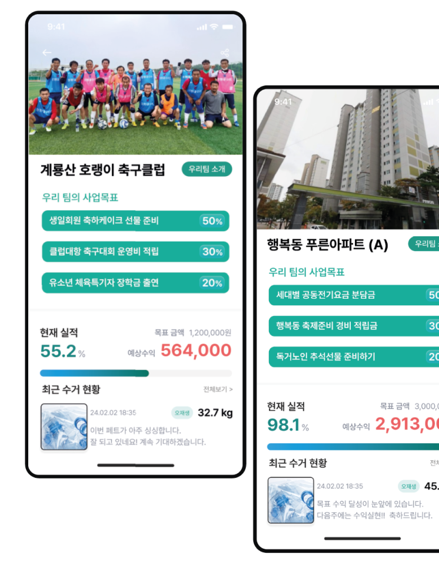
E p i l o g u e
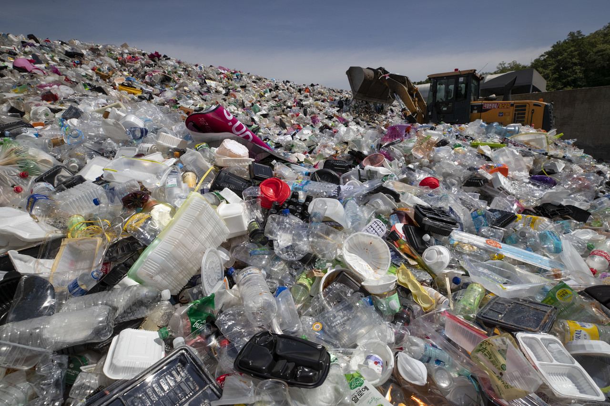
출처: 국민대학교 글로벌기후뉴스 [시사IN]
나 어떻게 해
다시 돌아가고 싶어!
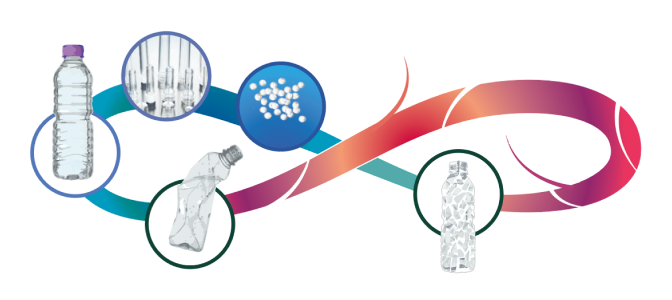
편리하면서 위험한 발명품
페트병이 다시 페트병으로 돌아가는 것이야말로 닫힌 순환고리로서 진정한 가치가 있습니다. 그러나 현재는 가치사슬이 끊어지고 소중한 자원이 중도 폐기되면서 도리어 생태계를 위협합니다.
편리하면서도 위험한 플라스틱의 자원순환 여정은 험난하기만 합니다.
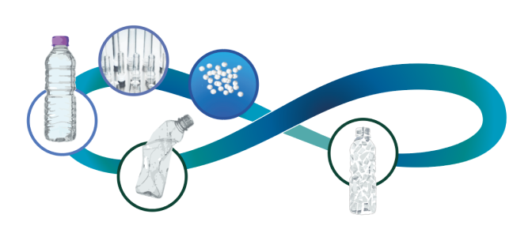
페트병은 다시 페트병으로
Bottle to Bottle
Bottle to Bottle
소비 후 배출되는 투명 페트병을 가장 깨끗하고 빠르게
고품질 재생 페트병으로 자원화하는 바른길을 새롭게 열어가겠습니다.
배출 현장에서 수거와 동시에 작은 조각으로 파쇄하여 오염 없이 압축하여 운반됩니다. 세상에서 가장 신선하고 건강한 페트병 재활용은 팀플레이에서 시작됩니다.
함께 하면 목돈이 됩니다.
세상에서 가장 신선한
투명 페트병 재활용
제로노믹스 카카오톡 오픈채팅
현재 구글플레이와 앱스토어에 베타버전이 출시되어 있지만 기술적 보완이 완료되면 정식 버전으로 12월에 런칭합니다. 카카오톡 오픈채팅방에 의견을 남겨주십시오. 정식 서비스가 출시되면 가장 먼저 소식을 전하겠습니다.
소중한 의견을 담겠습니다.
G2B B2B ESG 협업관련 문의
재활용품 분리배출이 자원순환 부서에서만 해결해야 하는 과제가 아닙니다. 지역 사회와 시민의 관심사를 연결하고 사회적 가치를 창출하는 다양한 시민 참여 프로그램을 준비하고 있습니다.
기업의 경우 ESG 경영과 연결하여 탄소중립을 실현하는 수단으로 기업과 시민이 함께하는 협력체계를 만들어갑니다.
협업 관련 문의하기
기업의 경우 ESG 경영과 연결하여 탄소중립을 실현하는 수단으로 기업과 시민이 함께하는 협력체계를 만들어갑니다.
제로노믹스 010-3424-7544